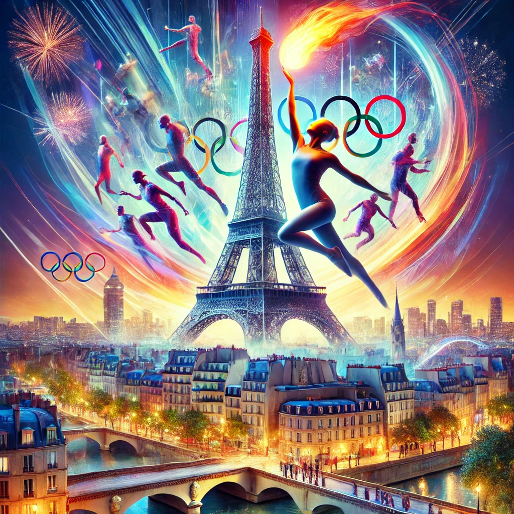

Jeux Olympiques de Paris 2024
Les Jeux Olympiques de Paris 2024 s'annoncent comme un événement exceptionnel, rassemblant des athlètes d'élite venus des quatre coins du monde, tous animés par la quête de gloire et de médailles d'or. Cette édition promet de mettre à l'honneur des disciplines classiques et innovantes, tout en célébrant la richesse du patrimoine culturel français. Avec un accent particulier sur la durabilité et l'inclusion, Paris 2024 incarnera l'esprit olympique en offrant une expérience inoubliable qui marquera l'histoire du sport et renforcera les valeurs universelles de diversité, de respect et d'excellence.
